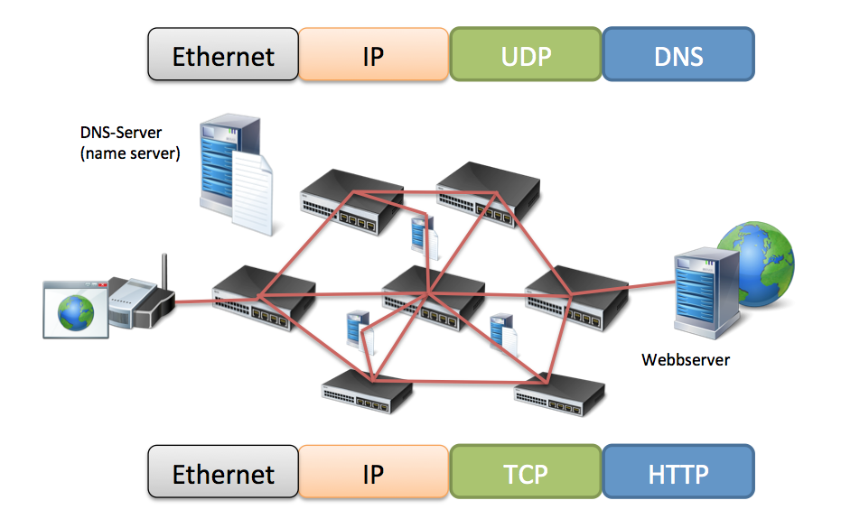

Webbteknik II, 1DV449
Linnéuniversitetet, Ht 2013
HTTP
 Denna presentation är licensierat under en
Creative Commons Erkännande 3.0 Unported Licens.
Denna presentation är licensierat under en
Creative Commons Erkännande 3.0 Unported Licens.
Denna presentation är licensierat under en
Creative Commons Erkännande 3.0 Unported Licens.

Foto cc by: http://www.flickr.com/photos/knightfoundation/
HTTP needs a reliable connection, standard port 80 - https 443
HTTP är textbased
HTTP är mer än bara filöverföring


Protokollstack, många protokoll (samling regler)
Grunden för all kommunikation på nätet
Byta ut olika nivåer
Paketbaserad
Ta olika vägar för att komma fram
TCP/IP är grunden för all kommunikation över Internet. Det är en så kallad protokollstack
och innehåller mängder av olika protokoll för olika typer av tillämpningar.
De olika nivåerna i stacken är separerade från varandra så att man enkelt kan bygga på del
och del. TCP/IP delar upp all trafik i mindre paket för att enklare kunna skicka
dessa över Internet. Varje lager i TCP/IP-modellen lägger på sin information på paketet
och tar också hand om det på andra sidan.

Internet består av miljontals servrar, routrar osv
Trafiken kan ta olika vägar - Beroende på tillgänglighet, prestanda m.m. Det var själva
tanken med Internet. Går en väg ner ska trafiken alltid kunna ta en annan.
Applikationer på internet - FTP, E-post, BitTorrent, Webben

HTTP är det vi ska gå lite djupare in i denna kurs och titta på mer i detalj vad som finns i det protokollet och vad som är viktigt för oss webbutvecklare.

Tips! Undvik onödiga HTTP-requests!
Detta gäller för en HTML-sida, en bild osv. En översiktlig del. Non-persistant (old way) prestanda: undvik onödiga requests Image maps, CSS Sprites, antal script och stilmallar
Hur kan det funka så bra!?!
http://www.w3.org/Protocols/rfc2616/rfc2616.html

Foto cc by Macco: http://www.flickr.com/photos/mako_side_b/

Foto cc by Tom Magliery: http://www.flickr.com/photos/mag3737/


| GET | Hämta en resurs (via URL), "read-only" |
| POST | Posta data (formulär). Skickar data från klient till server |
| HEAD | Hämta endast HTTP headern - ej ev. dokument |
| PUT | Ladda upp utpekad resurs |
| DELETE | Ta bort utpekad resurs |
| TRACE | Skicka tillbaka förfrågan precis som den kom (upptäcka ändringar på vägen) |
| OPTIONS | Får tillbaka en lista med vilka HTTP-kommandon som stöds |
| CONNECT | Används vid SSL-tunnlar |
GET och POST vanligast (betraktas som säkra)
Ofta inte stöd för andra (många tolkas som GET)
REST


335 requests! Hur fungerar det med request/response


Pull/Poll-tekniker, AJAX
Smartare med längre och längre requeststider m.m. Problem med HTTP vs realtid
Dold iframe. Servern skickar ut data (i form av javascript)
till webbläsaren när uppdateringar finns.
Servern använder "chunked encoding" så iframen uppdateras efter
hand med script som anropar "riktiga" sidan via parent-referensen
<iframe name="hidden" id="hidden" src="IFrameLongPolling.php" frameborder="0" height="0" width="100%"></iframe>
<?php // IFrameLongPolling.php
echo "<script type='text/javascript'>parent.updateCount('" . $count . "')</script>\n";
flush();
http://www.webreference.com/programming/javascript/rg30/index.html
IE måste br-tagg läggas till Safari minst 1KB, Ingen felhantering.
En request görs men servern svarar endast när ny data finns
Simulerar att servern pushar ut meddelanden
XMLHttpRequest-object, AJAX

Problem att man kan bli liggande med många öppna anslutningar


websocket = new WebSocket(ws://example.com:1337);
websocket.onopen = function(evt) { ... };
websocket.onclose = function(evt) { ... };
websocket.onmessage = function(evt) { ... };
websocket.onerror = function(evt) { ... };
websocket.send()
Content Delivery Network - En server nära dig!

Content Delivery Network

Bilder, script, css => statiska dokument
Spara kompior av ett reponse för att snabbare och effektivare presenter data vid en förfrågan Snabbare svar, mindre trafik statiska sidor vs. dynamiska snabbare och minska trafik Stale - Data som inte är uppdaterad (ej dynamiska sidor) Fräsh data

Fresh - Lita på att serverns response är giltigt
Stale - Cache:at response behöver uppdateras
Age? Hitta en bild med alla?
Expires

HTTP Date - Utgår från GMT Stort stöd Bilder och resuser som får tid långt framåt - Byt filnamn BILD Klockan - Syncproblem Lätt att glömma att man satt en tid långt fram

Introducerades med HTTP 1.1 Pragma - Stöds inte av de flesta cache
Unika identifierare sätts på servern för enklare(?) validering

If-None-Match - Validerar på servern ifall id:t har uppdaterats
Problem vid web frms osv.
De flesta webbservrar har redan cachning påslagen för statiska resurser.
Kan dock ställas om i konfigurationsfiler eller verktyg.
Sätta på filnivå, filändelsenivå o.s.v.
mod_expires, modul till Apache

Problem vid web frms osv.
Cache - PHP
Resurser som skapats av PHP bör man vara lite försiktid med att cache:a

Problem vid web forms osv.
När du uppdaterar din site - flytta bara de filer som uppdateras (ändrar inga Last-Modified) HTTPS är endast för sidor som behövs vara säkra. Sämre prestanda och noll cache.


Vary: Accept-encoding Används så att proxies inte ska cache:a komprimerade anrop och skicka till läsare som inte kan hantera gzip Vary = variera beroende på headers
I Apache görs detta i .htaccess i modulen mod_deflate

Kan styras i PHP-kod via ob_gzhandler
Finns en mod_gzip, men är lit eäldre och bökigare
 https://developers.google.com/chrome-developer-tools/
https://developers.google.com/chrome-developer-tools/
http://discover-devtools.codeschool.com/
Foto from: https://developers.google.com/chrome-developer-tools/

Foto cc by Justin Gaynor: http://www.flickr.com/photos/justingaynor/